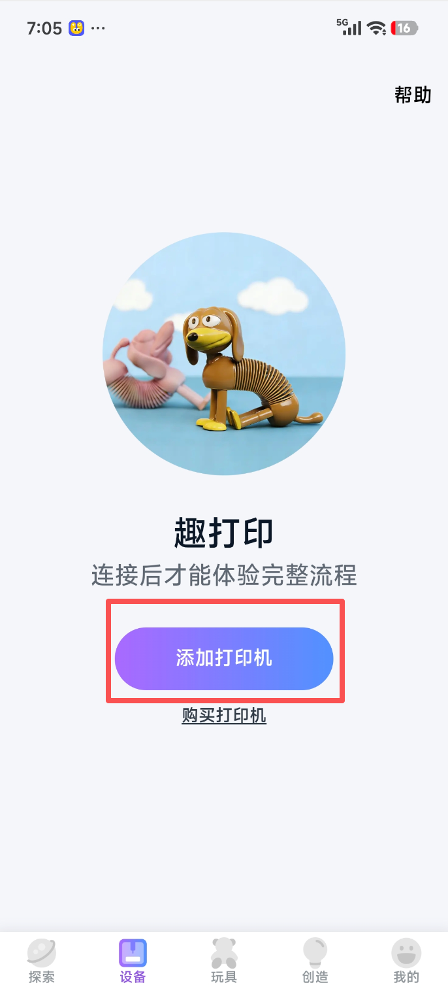
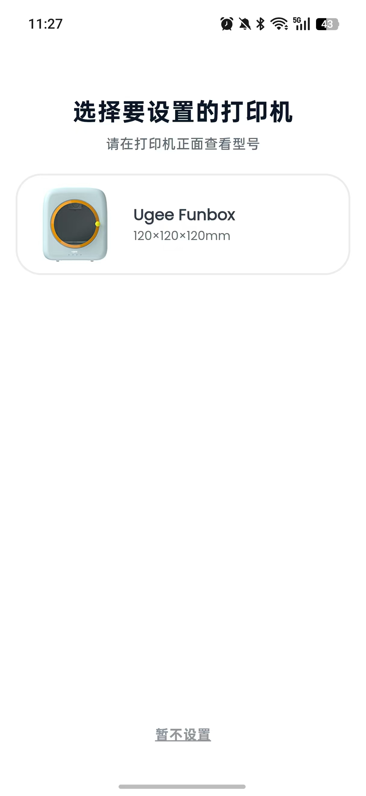
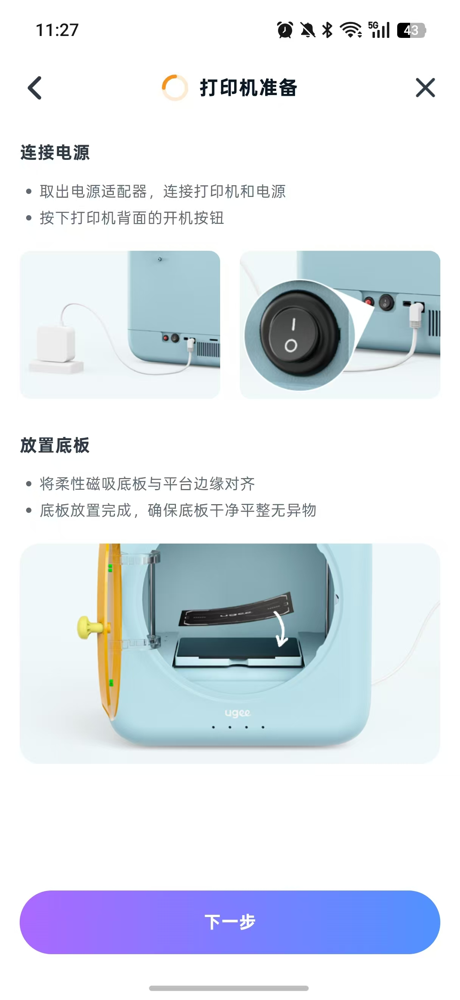
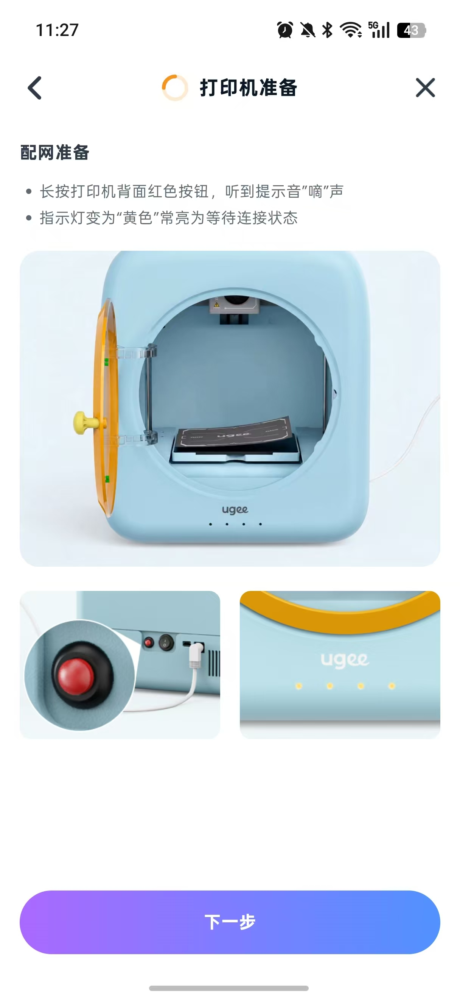
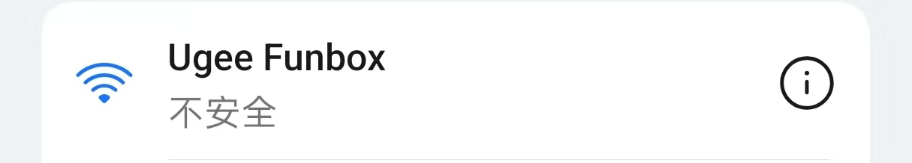

选择要设置的打印机
设置
位置信息访问
允许 Ugee 在配网时发现附近的打印机。
位置权限仅用于发现附近设备，本原型不会读取真实位置。
WLAN
选择打印机创建的临时 WiFi 热点。
打印机准备
连接电源
连接打印机和电源，按下打印机背面的开机按钮。

配网准备
长按打印机背面红色按钮，听到“嘀”声后等待黄色指示灯常亮。

连接打印机热点
连接打印机热点
请保持打印机开启，并确认打印机指示灯为黄色配网状态。点击下方按钮，一键连接打印机热点 ugee Funbot。

连接成功后，将自动进入网络配置
网络配置
为打印机配置家庭 WiFi
在配置前确保手机已连接打印机 WiFi 热点。
打印前准备
开始打印前，必须先进料，进料步骤如下：
-
插入耗材
将耗材插入，向喷头里推送耗材，直至无法前进。
图片1示例图 图片2示例图 -
进料
APP自动识别到耗材进入，选中耗材，编辑耗材信息并点击进料。
图片3示例图 图片4示例图 -
观察喷嘴
如果喷头正常吐出料丝，则完成进料。
图片5示例图 图片6示例图
演示台
配网流程 · 两种账号情况
同一套「首次配网连接流程」，按登录账号的类型分两种情况演示。儿童受限账号另提供起始页 v2：首页内容与 v1 相同，仅「家长授权」改为先判断家庭群组。切换后起始页的按钮文案与跳转都会跟着变。
① 账号类型默认 · 家长
② 家长授权后的邀请数据用于演示异常状态
③ 共享打印机状态
④ 儿童受限账号 · 起始页版本v2 只改「家长授权」逻辑
⑤ 家庭群组状态仅 v2 的「家长授权」生效
演示数据说明：邀请码池与「分享打印机」页保持一致（ABCD1234 / K7MP4821 / TRQ96135 / WXHN2847 / JLPZ9406 / FGDR3728），其中 FGDR3728 预置为「已过期」，其余可用码任选其一即可走通。
成人认证
儿童账号需要先完成成人认证
受儿童模式限制，添加打印机前需要由家长完成实名与成人认证。认证通过后，本页会自动放开配网入口。
- 认证由家长在「我的 - 家庭与权限」中发起
- 认证信息只用于合规校验，不会展示给孩子
- 已经由家长授权的共享打印机不需要重复认证
我的二维码
 小明
儿童账号
小明
儿童账号
家长扫码添加至家庭群组后可分享打印机
演示说明：二维码为示意图形，真实场景中由服务端生成。
加入共享打印机
和家人一起创作！
扫描家人的邀请二维码，或输入邀请码，即可使用共享打印机。
扫描邀请二维码
将摄像头对准家人分享的二维码
或者输入邀请码
输入邀请码
邀请码由家人分享，请在有效期内使用。
扫描二维码
把家人分享的邀请二维码放进框内，即可自动识别
确认邀请
你收到一份家庭邀请！
家人邀请你一起使用 3D 打印机。
爸爸家庭管理员
加入后，你可以
- 查看打印机状态。
- 选择模型并设置切片参数。
- 发起打印任务。
- 暂停、恢复或取消自己的打印任务。
设备管理、固件更新等高级功能由家庭管理员负责。
加入成功
加入成功！
现在你可以和家人一起使用这台打印机啦！
已自动添加到「设备」列表